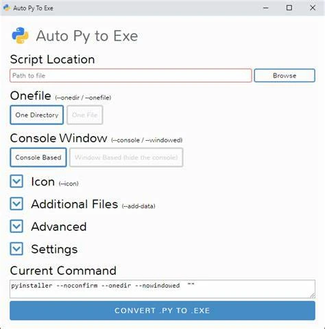

Grab some popcorn because this one is gonna be a long one!
Modules are a key part of python that keep it running. Most modules are
created by the python comunnity which can range from making text a different
color to fully functional 3D game engines such as panda3D and the ursina engine.
There are loads of modules you can use, like aforementioned, ursina for example but the main modules that almost everyone know are: Django, Flask, Colorama, Pygame and various sub-modules (pillow, psd etc.). There are also modules that are built-in to python like json, pickle, turtle and tkinter. In this blog we will cover a few of the modules stated above.
We will quickly cover the basics of these built-in modules:
• Turtle
• Json
• Tkinter
Using turtle is fairly simple, it is a module to draw shapes using a GUI, it comes with some really awesome functions like changing the size of the screen and or turtle, hiding the turtle and the main one, drawing. There are loads of python scripts out there that create loads of different images such as crew-mates from among us and characters from various TV shows. To ensure that you have the turtle you should run the script:
pip install turtle
And it should fail because the module is already installed but if it does download then you didn't have it and now you do! You can create whatever you want 😳. Below is a quick script you can play to see what turtle looks like!
Json is one of the most useful modules. It can be used to store data, catergorise data and edit data with ease aswell as being its own Data interchange format and is very easy to learn how to type in at and its a lot easier to code the data in aswell! Below is an example of loading the name of someone from the "data.json" file and then applying it to the python script.
json.pyimport json with open("data.json", "r") as f: name = json.load(f) print(name)
And now we need to create the data.json file so it can read the data without causing an error
data.json{ "name": "Bailey" }
Now with this you can use a json file to load and save data into python. This can allow you to create many more games with this skill such as clicker games and FPS with a story. Json can be used for other purposes like I have used, to store names and ages etc.
There are already quite a few good blogs that are on this website
that cover tkinter so instead of giving code examples I will just explain
what tkinter is and does.
Tkinter is a GUI application that comes
installed with python by default, with tkinter you can create various apps
like calculators and equation machines which is very good for beginners of python.
You can view the other blogs here
We will quickly cover the basics of these modules that are built by others:
• Pygame
• auto-py-to-exe
• Ursina
There are hundreds, if not thousands of user built modules, you can find them all on pypi.
Who knows you could be another one of the people that creates modules for the community to use!
Pygame is one of the most popular game engines in python with loads of games
being made each day and it's really simple to create a game with it. Below you can see an
exapmle of a game I made with pygame that you can download and play!
- Pygame.py
It's a simple game where you catch falling objects and it adds
up your score. But pygame can be used to create any game you've ever wanted.
It uses mostly simple python syntax and is compatible with almost every module
that exists in python, there are some awesome tutorials online for pygame
as the pygame community is massive and the module constantly gets updated to
keep it as fresh as possible.
Auto-py-to-exe is one of the most helpful modules I've personally ever seen.
Auto-py-to-exe does exactly what the name suggests, it turns any python file/script
into a runnable executable file that windows can run, you dont even need python
to run the .exe file as it comes packed with it and the file size for the game
only ends up being around 200MB which is incredibly good! you can install it from pip
or pypi and can open the GUI by typing "auto-py-to-exe" into the terminal. I can't really
provide an example but here is a screenshot of what it looks like.

Overall auto-py-to-exe is one of the best modules out there, and of course pyinstaller the
root module that makes it all happen.
Just like tkinter there are already blogs covering ursina in good detail so I will link and quickly go over ursina in the section. You can see the full blog here
Ursina is latin for little bear and is a really powerful but simple 3D and 2D game engine developed by the all powerful, Pokepetter. Ursina is based on Disney's panda3d system but ursina makes the whole system much more easier to use with prefabs like a platform controller and the "FPC" AKA First person controller. Overall ursina is one the best engines for python out there and it was the first ever engine I ever used to make a 3D game. If you wanna try out one of my games with ursina you can by going to my github repo and downloading it here or you can try the web-based version here
There are loads of modules that are helpful and whatever you need in python there is, without a doubt, a module out there for it and I highly recommend you research as much modules as you can when developing games as you never know when you might need a certain module. Thank you for reading this blog and I can't wait to see you in the next blog!
Created by ItsbaileyX